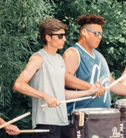
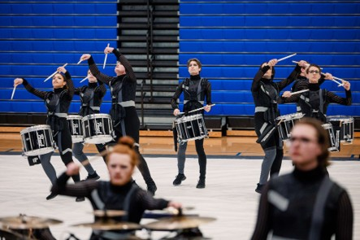
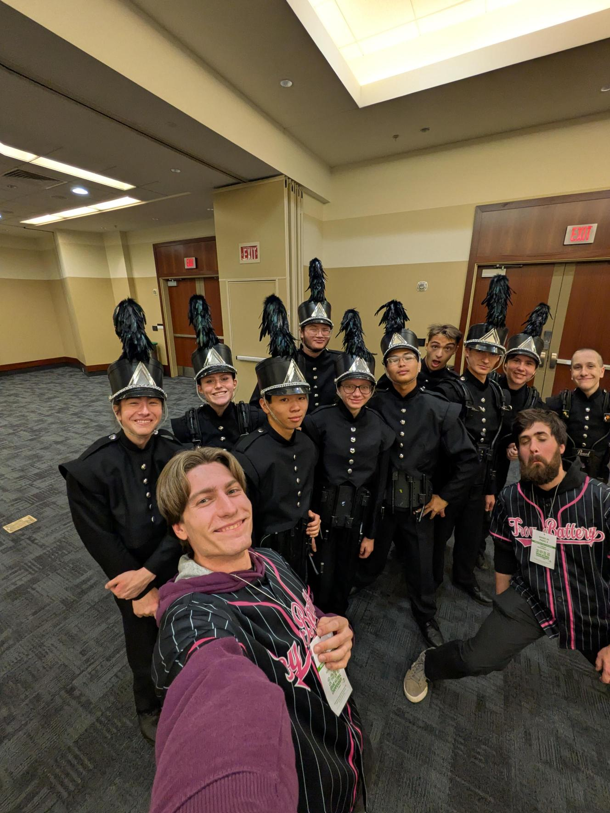

Engineer, Designer, and Builder
I'm Nathaniel Weidner, a Mechanical Engineering senior at Ohio University graduating in May 2027.
I'm most interested in mechanical design and product development, particularly work where I can take a problem from early requirements and concepts through CAD, analysis, prototyping, manufacturing, and testing.
Aerospace is the industry I'm most interested in, followed closely by manufacturing and broader mechanical product development.

From an Idea to Something Real
The part of engineering I enjoy most is moving from an open-ended problem toward something tangible. I like understanding what a system needs to do, developing the geometry and mechanisms in CAD, working through the analysis and manufacturing constraints, and eventually seeing the design become real hardware.
My experiences have shown me that the final CAD model is only part of the job. Requirements change, parts do not always fit the way expected, manufacturing introduces constraints, and testing exposes problems that were easy to miss on a screen. Working through those issues is one of the parts of engineering I find most rewarding.
A Range of Engineering Environments

dormakaba Americas
Mechanical Engineering Intern · 2026
Worked on the Product Development team and co-led the development of a machine-safety guarding system from requirements through design, analysis, fabrication, and validation.
View Project Bastion →
Ohio University · Digital Enterprise Collaboratory
Mechanical Design Lead · 2024–2026
Progressed from building and troubleshooting EVA to leading the mechanical development of Gizmo, designing servo-driven mechanisms and integrating the complete system.
View Animatronics →
Ohio Department of Natural Resources
Abandoned Mine Land Engineering Intern · 2024
Gained field and design experience supporting abandoned-mine reclamation through AutoCAD plan development, site data, technical specifications, and field work.
View ODNR Experience →Ohio University
B.S. Mechanical Engineering
Expected May 2027
GPA: 3.977
Project Management Certificate
Ohio Honors Program
Where I Want to Grow
- Mechanical Design
- Product Development
- Aerospace Systems
- Manufacturing
Core Toolkit
CAD: SolidWorks, Creo Parametric, AutoCAD
Analysis: SolidWorks Simulation, MATLAB, Excel, Python
Process: Drawings, BOMs, DFMEA, GD&T fundamentals
Marching Percussion
Marching percussion has been one of the biggest parts of my life outside engineering. I started in school ensembles and eventually moved into independent drum corps and indoor percussion, including Cincinnati Tradition and Cap City.
Over time I progressed into increasingly competitive ensembles, spent several seasons in leadership roles, and now help teach the drumline program I came from.
The activity has given me some of my closest friendships and most demanding experiences. It has also shaped how I prepare consistently, accept feedback, work toward a shared standard, and keep improving even after something already feels “good enough.”




Tau Beta Pi
Vice President
Mechanical Engineering Department
Student Liaison
Marching Percussion
Section Leadership & Instruction
Beginning My Engineering Career
As I approach graduation in May 2027, I'm preparing for entry-level mechanical engineering opportunities where I can continue developing as a designer and contribute to real products and hardware.
I'm particularly interested in mechanical design and product development roles, with a strong interest in the aerospace industry and opportunities involving manufacturing, prototyping, and hands-on development.